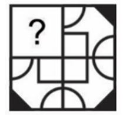
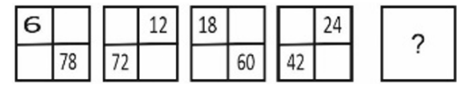
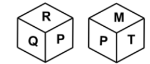

Q1. Select the option that is related to the fifth word in the same way as the fourth word is related to
the third word and the second word is related to the first word.
CABBAGE: VEGETABLE :: CUSTARD: DESSERT :: PEACH:?
Q2. Which two numbers should be interchanged to make the given equation correct?
8+7×5+14-3-6
Q3. Which of the following letter-number cluster will replace the question mark (?) in the given series?
UDF6, VF19, ?, XJO15, YLR18, ZNU21
Q4. 'PxQ' means 'P is the father of Q'
'P+Q' means 'P is the brother of Q'
'P+Q' means 'P is the son of Q'
'P-Q' means 'P is the husband of Q'
How is O related to L in the expression 'O+N+M-L'?
Q5. In a certain code language, 'ALLIES' is coded as 'REHLKA'. What is the code for 'BALLET' in that
code language?
Q6.
Three Statements are given followed by two conclusions numbered I and II. Assuming the statements to be
true, even if they seem to be at variance with commonly known facts, decide which of the conclusions
logically follow(s) from the statements.
Statement I: All pens are stationery items.
Statement II: Some stationery items are rubbers.
Statement III: All markers are pens.
Conclusion I: Some stationery items are not rubbers.
Conclusion II: Some markers are not stationery items.
Q7. Which answer figure will complete the pattern in the question figure? (rotation is not allowed)

Q8. In the following question, select the missing number from the given series.
14, 6, 5, 6.5, 12, ?
Q9. In the following question, select the figure which can be placed at the sign of question mark (?)
from the given alternatives.

Q10. Which of the following groups of letters when sequentially placed from left to right will complete
the given series?
opq_stopqrsto_qrstopqrs_opqr_t
Q11. Two different positions of the same dice are given below. Find the letter opposite of M.

Q12. Which of the following groups of letters when sequentially placed from left to right will complete
the given series?
ee_fgghheeffgg_heeffgghheeff_hh
Q13. From the given option figures, select the one in which the question figure is hidden/embedded. (rotation is not allowed)